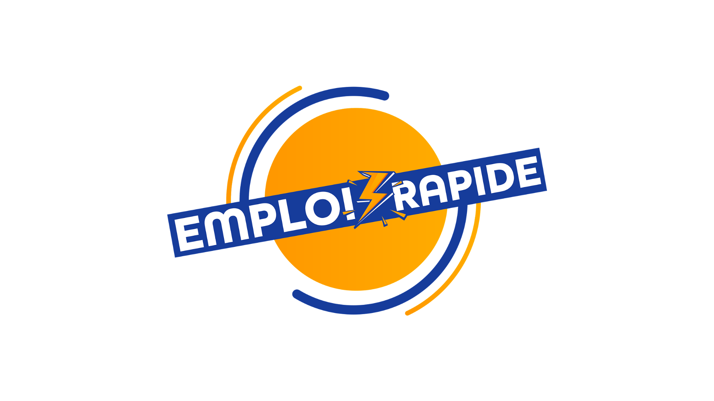
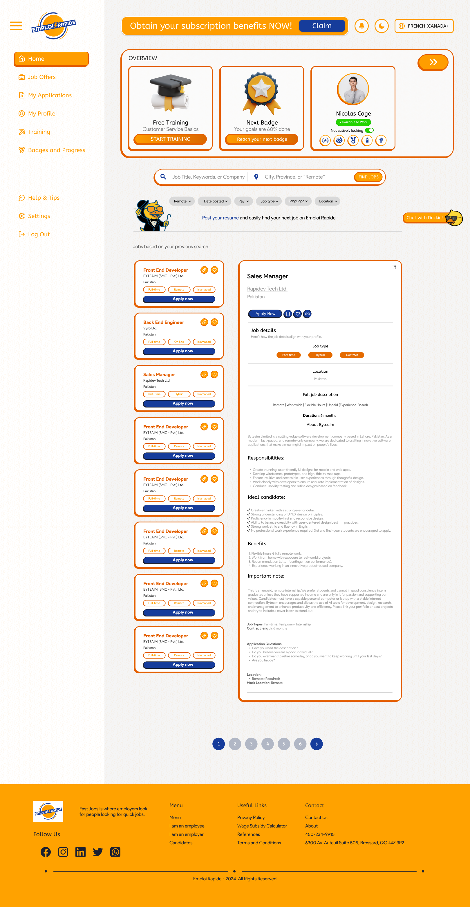
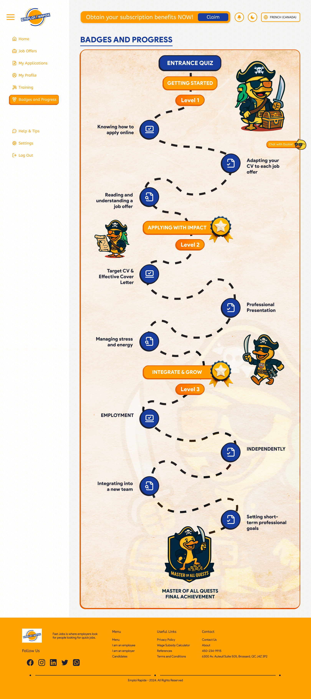
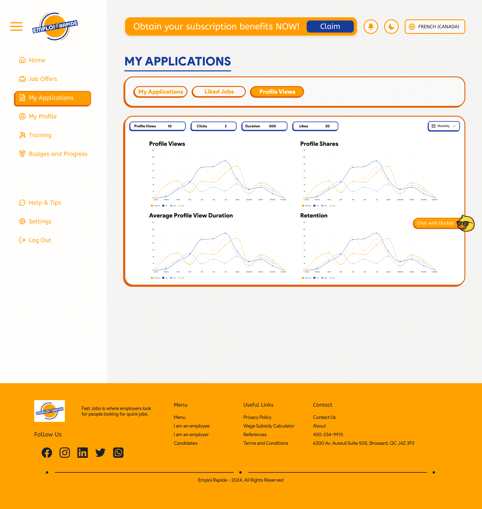
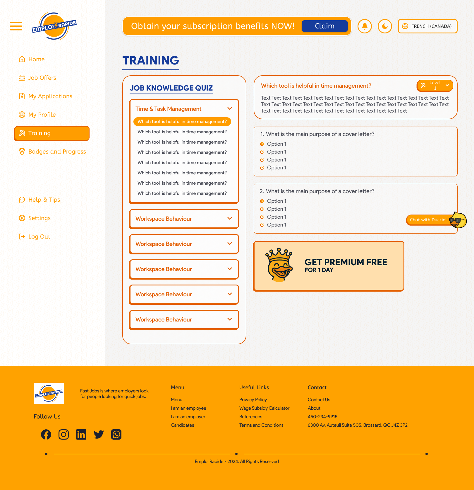
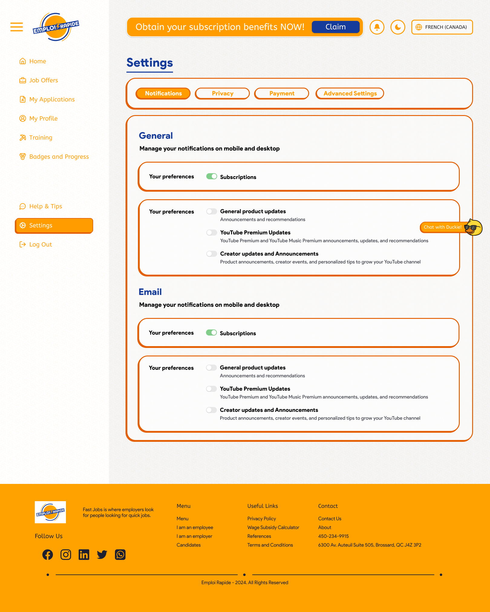

Job listings, built to convert.

How do you help people find local work fast?
Emploi Rapide is a job platform that helps people in Canada and France find local jobs and apply to them quickly, in the spirit of LinkedIn but built for everyday local work. I worked on it as a product designer at Norenztech. The live site has since been redesigned, and this case study covers my original design.
Product Design
Shaping how people search, compare and apply to local jobs.
Training and Badges
A level based path that helps job seekers get ready to apply.
Brand in Product
Bringing the duck mascot and the orange and blue palette into every screen.
Finding local work needs more than a list of jobs
Most job platforms are built around corporate roles and long profiles. People looking for local work need to find nearby openings, understand them quickly and apply without friction. Many of them also need help learning how to apply well in the first place.
Find it, understand it, apply well
- Find local jobs and narrow them by what matters, like pay, job type and language
- Read a full job description without leaving the list
- Get ready to apply through training, badges and a clear profile
- Decide who can see their profile
Every screen had to keep the job seeker moving toward an application.
Warm orange, deep blue and a duck with personality
The brand pairs a warm orange with a deep blue. Orange gives the product its energy and frames the cards and navigation, while blue is used for the actions that matter most, like Apply now. Rounded, outlined cards keep the interface friendly instead of corporate.
A duck mascot ties the product together. It appears as a chat helper on the home page and dresses up as a pirate on the training path, so learning feels like a quest instead of a chore. The product is organized into six areas: home, job offers, my applications, my profile, training, and badges and progress, with settings and help close by.
Key Decisions
5.1 A home that starts with the person
The home screen opens with an overview of the job seeker: a free training course to continue, progress toward the next badge, and a profile card with a switch for whether they are actively looking. Job search comes right after, so the first thing someone sees is their own momentum.

The home screen with the overview, search, filters and job list.
5.2 Search, filters and a job list that opens beside it
Search takes a job title, keywords or company, plus a city, a province or Remote. Filters for remote, date posted, pay, job type, language and location narrow the list. Each job card shows the title, employer, place and key tags, with an Apply now button. The full job opens in a panel beside the list, so people can compare jobs without losing their place.
A preview of the Emploi Rapide experience.
5.3 Training that feels like a quest
Getting hired is easier when you know how to apply, so I designed a badges and progress path. It runs from an entrance quiz through three levels: Getting Started, Applying with Impact, and Integrate and Grow, ending with the Master of All Quests achievement. Each level covers a real skill, from reading a job offer and adapting a CV to managing stress and joining a new team. Pirate themed duck characters turn the path into a quest.

The badges and progress path.
5.4 Keeping track of applications
My Applications sorts everything into three tabs: My Applications, Liked Jobs and Profile Views. Liked jobs show their application deadlines, so nothing expires unnoticed. Profile Views turns activity into charts for views, shares, average view duration and retention, so job seekers can see how their profile performs.

Liked jobs and profile analytics.
5.5 A profile that works like a CV
The profile brings the whole story together: an about section, skills, experience, academic background, certifications and languages, each in its own card, so employers can scan it quickly.

Job knowledge training and quiz modules.
5.6 Settings and privacy
Settings are split into Notifications, Privacy, Payment and Advanced Settings. Privacy gives four clear choices: Open to work, Not actively looking, Only link sharing and 100% private, so job seekers decide who can find them. The header keeps notifications, dark mode and a language switch within reach on every screen.

Privacy settings.
Live and helping people find work
Emploi Rapide is live and helping people find local work. My original design covered the full journey: searching and applying, preparing through training and badges, tracking applications and managing a profile. The platform has since been redesigned, and its current site lists more than 1,000 active jobs, with more than 50 new ones added every day.
Visit Emploi RapideWhat I took from it
The biggest challenge was fitting so much into one product: search, a full job view, training, analytics, a profile and settings. Keeping the main navigation fixed on the left and using tabs inside each area kept everything easy to find.
Turning training into a quest taught me how much character and structure can change something people usually avoid. The mascot and the level path made preparing for a job feel lighter.
The product has been redesigned since, which is a good reminder that a design is never finished. If I worked on it again, I would test the search and apply flow with real job seekers.